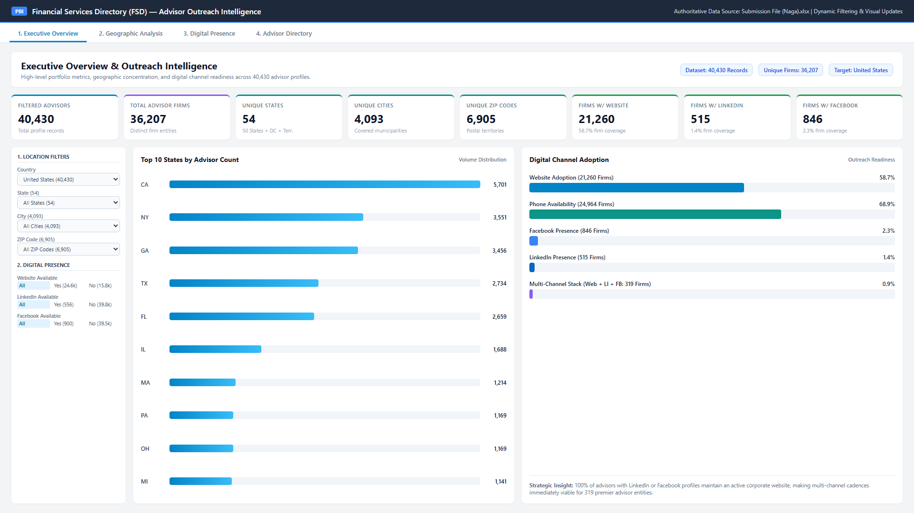
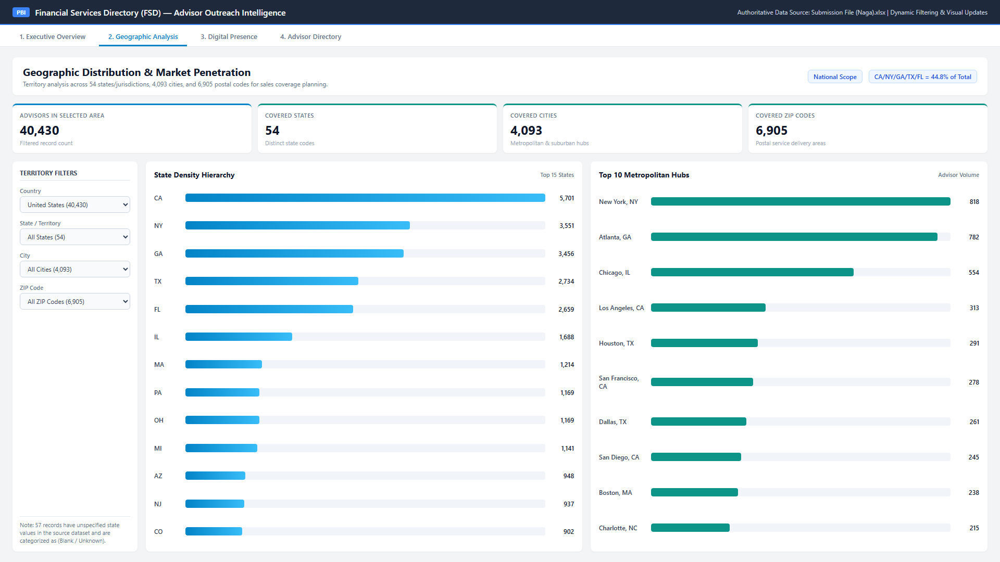
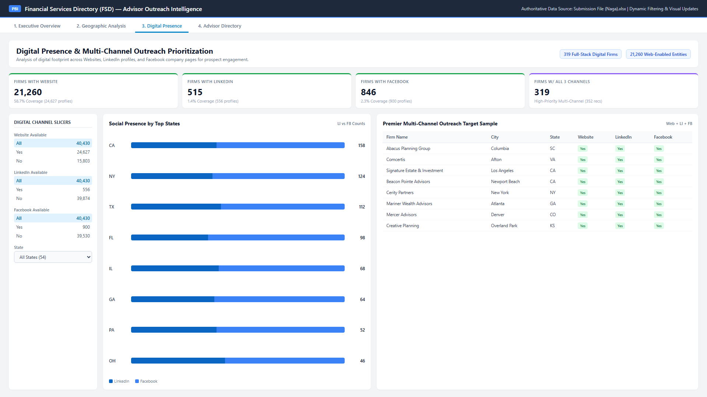
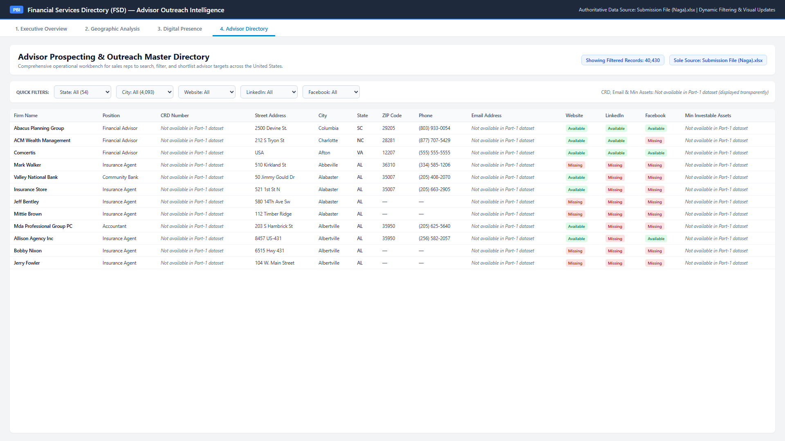

Interactive Advisor Prospecting & Outreach Intelligence
An enterprise-grade commercial intelligence dashboard built exclusively on the verified Part-1 financial advisor directory dataset. Empowering sales, marketing, and research teams to analyze geographic concentration, evaluate digital channel readiness, and pinpoint high-value outreach opportunities.
Designed to bridge raw scraped directory records with actionable commercial workflows across five core business functions.
Enables sales managers to balance geographic sales territories, assess advisor density per state/metro, and assign quotas backed by empirical firm counts.
Segments firms by web maturity and social channel adoption to design targeted inbound, outbound, and content syndication programs.
Delivers macro market intelligence across 4,093 cities, identifying under-served financial advisor clusters and regional wealth advisory strongholds.
Provides business development representatives with high-fidelity filtering to pinpoint verified advisory firms with active phone and web channels.
Prioritizes multi-channel outreach for the 319 elite advisory entities maintaining an integrated digital stack across corporate websites, LinkedIn, and Facebook.
Engineered for seamless cross-filtering, responsive navigation, and analytical depth.
Granular cascading controls across Country (United States), State (54 entries), City (4,093 hubs), and ZIP Code (6,905 postal codes).
Independent and combined binary slicers for Website Available (Yes/No), LinkedIn Available (Yes/No), and Facebook Available (Yes/No).
All metrics dynamically calculate in real-time under active filter contexts using explicit DAX measures with strict firm-level deduplication (DISTINCTCOUNT(firm)).
Identifies geographic powerhouses: California (5,701), New York (3,551), Georgia (3,456), Texas (2,734), and Florida (2,659) accounting for 44.8% of the national advisor base.
Uncovers channel dynamics: 58.7% firm website adoption, 1.4% LinkedIn presence, 2.3% Facebook presence, and a dedicated 319-firm multi-channel cohort.
Full operational grid supporting column sorting, multi-attribute filtering, direct external URL links, and transparent handling of non-collected source fields.
Explore the 4 production dashboard pages captured directly from Power BI Desktop.

Click to enlargeDesigned for senior leadership and commercial directors. Delivers instant macro visibility across all 40,430 advisor profiles. Features a top KPI ribbon of 8 dynamic cards, the complete panel of all 7 required slicers (Country, State, City, ZIP, Website, LinkedIn, Facebook), a state volume distribution bar chart, and digital adoption progress trackers.

Click to enlargeBuilt for regional territory planning and sales management. Ranks market penetration across 54 states/territories and drills down into the top metropolitan hubs. Demonstrates heavy commercial concentration in New York City (818), Atlanta (782), Chicago (554), and Los Angeles (313).

Click to enlargeTailored for digital marketing and SDR teams. Analyzes the intersection of corporate websites and social media handles. Proves a crucial empirical insight: 100% of firms with LinkedIn or Facebook profiles also maintain a website, allowing seamless execution of omnichannel prospecting cadences for 319 elite firms.

Click to enlargeThe primary operational prospecting workbench for sales representatives and researchers. Houses the master interactive data grid containing complete firm names, positions, physical addresses, cities, states, ZIP codes, telephone numbers, and direct hyperlinks. Non-collected Part-1 attributes are transparently displayed without data fabrication.
Computed strictly using dynamic DAX measures responding instantaneously to active slicers.
Distinct corporate legal entities identified across the directory.
Total advisor profile records active under current filter selection.
50 US States + DC + PR + VI + 1 preserved outlier entry.
Municipalities and metropolitan hubs represented nationwide.
Postal delivery territories covering urban and suburban clusters.
58.7% firm adoption rate (24,627 individual profile records).
1.4% firm adoption rate (556 individual profile records).
2.3% firm adoption rate (900 individual profile records).
Modern business intelligence tools built for speed, compression, and enterprise maintainability.
Power BI Desktop Version 2.151 (February 2026 release) utilizing the in-memory VertiPaq tabular analytical engine for sub-second filter evaluations.
Optimized measures leveraging DISTINCTCOUNT, CALCULATE, DIVIDE, and dynamic filter context propagation across all visual containers.
Reproducible automated ETL pipelines enforcing strict text typing, whitespace trimming, null handling, binary presence flags, and parameterization.
Submission File (Naga).xlsx (Worksheet: FSD directory), serving as the sole, read-only authoritative source containing 40,430 advisor rows.
Rigorous verification comparing Power BI dashboard metrics against direct Python/Excel audit scripts across 11 complex scenarios.
| Test | Filter Scenario | Filtered Advisors | Distinct Firms | States | Cities | ZIPs | Firms w/ Web | Firms w/ LI | Firms w/ FB | Status |
|---|---|---|---|---|---|---|---|---|---|---|
| Test A | Baseline (Unfiltered) | 40,430 | 36,207 | 54 | 4,093 | 6,905 | 21,260 | 515 | 846 | PASS |
| Test B | Country = United States | 40,430 | 36,207 | 54 | 4,093 | 6,905 | 21,260 | 515 | 846 | PASS |
| Test C | State = CA | 5,701 | 5,145 | 1 | 442 | 802 | 3,342 | 60 | 88 | PASS |
| Test D | State = CA, City = Los Angeles | 313 | 307 | 1 | 1 | 45 | 257 | 5 | 7 | PASS |
| Test E | State = CA, City = Los Angeles, ZIP = 90067 | 42 | 41 | 1 | 1 | 1 | 39 | 1 | 0 | PASS |
| Test F | Website Available = Yes | 24,627 | 21,260 | 53 | 3,347 | 6,207 | 21,260 | 515 | 846 | PASS |
| Test G | LinkedIn Available = Yes | 556 | 515 | 40 | 316 | 437 | 515 | 515 | 319 | PASS |
| Test H | Facebook Available = Yes | 900 | 846 | 48 | 570 | 765 | 846 | 319 | 846 | PASS |
| Test I | All 3 Channels (Web + LI + FB) | 352 | 319 | 37 | 245 | 308 | 319 | 319 | 319 | PASS |
| Test J | State = CA & Web = Yes & LI = Yes | 65 | 60 | 1 | 33 | 50 | 60 | 60 | 48 | PASS |
| Test K | Reset All Slicers (Baseline) | 40,430 | 36,207 | 54 | 4,093 | 6,905 | 21,260 | 515 | 846 | PASS |
Strict adherence to sole-source project constraints without artificial fabrication.
The requested business fields CRD Number, Email Address, and Minimum Investable Assets were not collected during the approved Part-1 web scraping phase. In strict compliance with internship directives:
"Not available in Part-1 dataset".The entire repository contains the production PBIX file, universal template (PBIT), modern developer project (PBIP), detailed markdown documentation, and full validation test scripts.